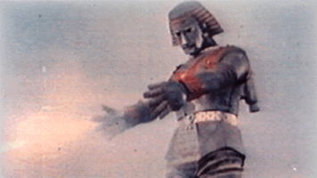
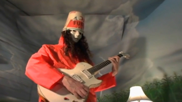
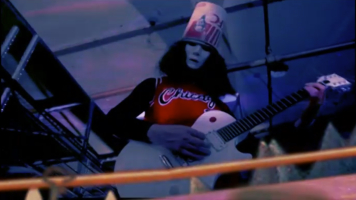
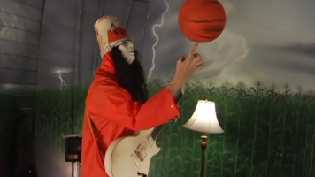

Buckethead Pikes: Buckethead's official website.
Launched
in
2011 along with the release of the Pikes project.
Bucketheadland.com: Archive.org
captures
of Buckethead's old website, active from the late 90s until 2011, when it was abandoned in favor of the
Pikes
website.

Buckethead Archive: YouTube channel created
with the
goal of archiving Buckethead's entire discography, as catalogued by the spreadsheet.

Natternet: Awesome Buckethead fan channel with
reviews,
discussions, and investigations of all things Buckethead related.

Buckethead Subreddit: A subreddit dedicated to
Buckethead. You can find discussions about Buckethead's gear, cool pictures, and lots of other stuff
here.

Pike Suggester: A simple tool created by
decino to find Pikes you might like. You can sort to include/exclude by genre to find the right Pike for your
current mood.